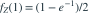

X与Y独立， ，Z=X+Y。给定Z=1时，X的条件密度在0<x<1上为？
，Z=X+Y。给定Z=1时，X的条件密度在0<x<1上为？
，Z=X+Y。给定Z=1时，X的条件密度在0<x<1上为？- A

- B
- C
- D
我已思考，展开答案与解析
正确答案：D
- 变换(X,Y)为(X,Z)，Jacobian绝对值为1。联合密度在0<x<1时为 。
- 分母

。 - 相除得到 ，积分0到1为1。
易错提醒连续变量“给定Z=1”用条件密度定义，不能以P(Z=1)=0就说无法定义。
考后回忆 · 条件重建 · 回忆19的条件分布提高题
依据考试回忆重建；数字、选项和必要条件为补充设定，非原题。